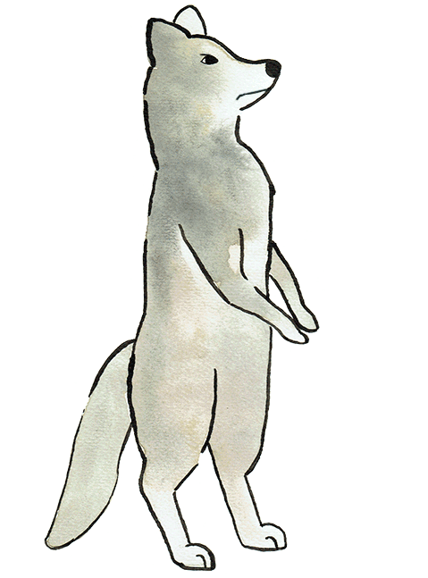
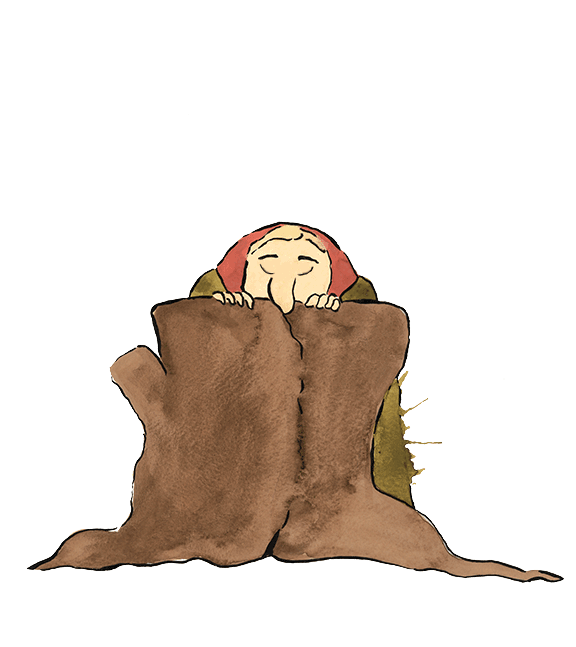

LAG ET EVENTYR
Det var en gang en vakker reve-enke som het Venke som bodde langt inne i skogen med hushjelpen, katten Korse. En tid etter mannen hennes døde tok det til å komme mange friere til enka.
Den første som prøvde seg var den grå Ulven Bjarne . På veien møtte ulven en gammel og grå kjerring som hadde fått det lange nesegrevet sitt fast i en stor trestubbe. I over hundre år hadde hun stått der, og ba ulven om hjelp. Men Bjarne var likeglad og hadde annet å gjøre. Ulven skulle til Reve-enka og fri.

